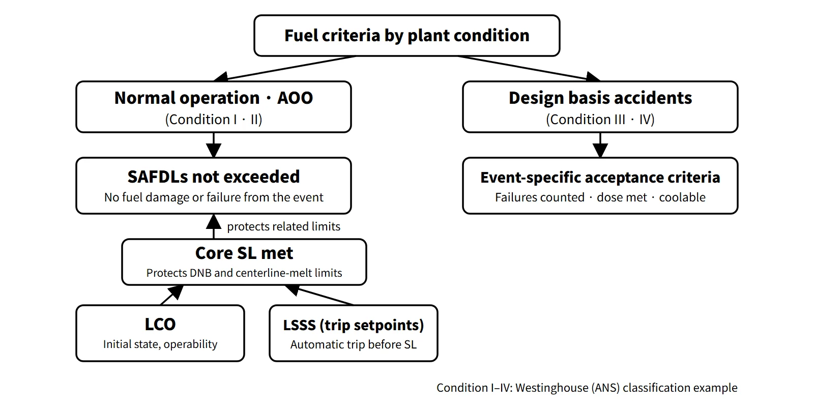

Fuel & Materials · C-FM-012
Specified Acceptable Fuel Design Limits (SAFDL) — The Design Limits That Keep Fuel Rods Intact in Normal Operation and AOOs
Design limits that keep fuel intact in normal operation and AOOs, carried into operation as safety limits, trip setpoints and LCOs.
Specified acceptable fuel design limits (SAFDLs) are the design limits set on DNBR, fuel centerline temperature, cladding strain and internal pressure, and similar quantities to prevent fuel damage during normal operation and anticipated operational occurrences (AOOs); the core and the coolant, control and protection systems must be designed with margin so that they are not exceeded (GDC 10).
The same concept also appears under names such as "allowable fuel damage limit" and, more broadly, "fuel rod design criteria".
Principle and mechanism
What it prevents — three categories and when they apply
NRC SRP 4.2 (Rev. 3, 2007) divides the fuel system design criteria into three categories.
| Category | Applies to | Requirement |
|---|---|---|
| Fuel system damage | Normal operation (including AOOs) | Dimensions stay within operating tolerances; functions do not fall below safety analysis assumptions |
| Fuel rod failure | Normal operation, AOOs and postulated accidents | No failure from specific causes in normal operation and AOOs; in accidents, the number of failed rods is included in the dose analysis |
| Coolability | Postulated accidents | Coolable bundle geometry and control rod insertability maintained |
The SAFDLs referred to in GDC 10 are the damage and failure limits applied to normal operation and AOOs from the first two categories. Failure evaluation for accidents within the failure category belongs to the accident acceptance criteria, not the SAFDLs. Failure is defined as "loss of fuel rod hermeticity". Since the SRP also accepts that a few leaking rods are unavoidable and are handled by the cleanup system, "SAFDLs not exceeded" is best read as "the fuel is not damaged or failed because of the event in question". The coolability criteria for accidents (PCT, oxidation, etc.) are acceptance criteria for postulated accidents and must be kept separate from the SAFDLs for normal operation and AOOs.
Specific criteria by category
Fuel system damage (confirmed by design analysis)
- Stress and strain: ASME III-type stress limits for structural members. In the Westinghouse-type (AP1000) example, the volume-averaged Von Mises effective stress in the cladding < 0.2 % offset yield stress (accounting for temperature and irradiation)
- Fatigue: cumulative usage factor < 1. The design fatigue curve uses a safety factor of 2 on stress amplitude or 20 on the number of cycles, whichever is more conservative
- Fretting wear: allowable wear limited, accounting for grid spring relaxation
- Oxidation, hydriding and crud: component limits set from mechanical tests (strength, ductility) and irradiation data. The values are fuel- and unit-specific (e.g. a CE-type unit with a 100 μm oxide limit)
- Rod internal pressure: below nominal system pressure during normal operation. If it is exceeded, there must at least be no lift-off (the gap reopening as the cladding creeps outward), no radial reorientation of hydrides, and an evaluation of additional DNB failures of overpressurized rods in transients
- Dimensional changes (rod bow, irradiation growth), assembly holddown force, control rod insertability
Fuel rod failure (not allowed in normal operation and AOOs)
- Cladding overheating: MDNBR ≥ the 95/95 limit of each CHF correlation. The SRP treats DNB not as a failure mechanism itself but as a conservative surrogate criterion.
- Pellet overheating: no centerline melting. The limit starts from the unirradiated UO₂ melting point of 5,080 °F (2,804 °C) and is lowered by 58 °F (32 °C) per 10 GWd/tU. The purpose is to prevent molten fuel from moving and contacting the cladding or creating local hot spots.
- Transient strain: cladding uniform strain (elastic + inelastic) ≤ 1 %. Only strain caused by the transient is counted; normal creep-down and irradiation growth are excluded.
- Cladding collapse: flattening of the cladding into an axial gap formed by densification is assumed to be a failure. It is ruled out by evaluating pellet densification, axial gaps and cladding creep, and He pressurization helps.
- Primary hydriding: fuel moisture at fabrication ≤ 20 ppm.
![Matrix of representative SAFDL criteria beside a render of a spacer grid with a cutaway fuel rod. Fuel system damage: cladding stress below 0.2 percent offset yield, fatigue usage factor below 1, fretting wear, oxidation, hydriding and crud, rod internal pressure with no lift-off. Fuel rod failure: MDNBR at least the 95/95 limit (e.g. KCE-1 1.29) protected by the core safety limit, CPC low-DNBR trip and DNB-parameter LCO; no centerline melting (2,804 degrees Celsius unirradiated, minus 32 degrees per 10 GWd/tU) protected by the core safety limit, CPC high-LPD trip and LHR and ASI LCOs; transient uniform strain at most 1 percent; no cladding collapse. Separately, accident coolability criteria: PCT at most 1,204 degrees Celsius and ECR at most 17 percent, and RIA fuel enthalpy limits](../../assets/images/concepts/c-fm-012-safdl/fig1-safdl-matrix.webp)
What it means in a plant
SAFDL → core SL → LSSS → LCO
SAFDLs are design-stage limits; for operation, the two representative axes are carried into the Technical Specifications.
- Core safety limits (SL): MDNBR ≥ the 95/95 limit (e.g. 1.29 for APR1400 KCE-1) and peak centerline temperature < the melting limit.
- LSSS (trips): in CE-type plants (OPR1000, APR1400), the CPC calculates DNBR and local power density (LPD) in real time and issues low-DNBR and high-LPD trips. The setpoints are placed on the conservative side of the SL to account for calculation and measurement uncertainty and response time: the low-DNBR trip acts at a DNBR above the SL, and the high-LPD trip at an LPD below the limit.
- LCO: linear heat rate (LHR), DNBR margin, axial shape index (ASI), azimuthal tilt, control rod insertion limits, and RCS DNB parameters (pressure, temperature, flow). COLSS monitors the margins with in-core detectors.
Every SAFDL is first demonstrated by fuel design and safety analysis. The AOO analyses in FSAR Chapter 15 start from initial conditions at the LCO boundaries and show that, with trips at their analytical limits, MDNBR and peak linear power stay within the limits. The representative thermal limits (DNB, centerline melting) are in addition managed in operation by the SL, LSSS and LCO, while strain, internal pressure, fatigue and oxidation are managed by fuel design analysis, burnup limits and ramp-rate limits. The LCOs secure the initial conditions and operating envelope, and the LSSS acts before a limit is reached; together they support compliance with the SL.
Neighboring concepts in brief
- DNBR: the minimum of q″CHF/q″ (MDNBR). The 95/95 limit is set from the correlation's M/P distribution and system uncertainties. The old value of 1.30 dates from the W-3 era.
- Linear power reference lines: the normal-operation peak and LCO of about 42–45 kW/m and the melt-prevention SAFDL (about 59–69 kW/m depending on design; CE-type 21 kW/ft = 68.9 kW/m) are different lines.
- ECCS acceptance criteria: PCT 1,204 °C, ECR 17 %, hydrogen 1 %, coolable geometry, long-term cooling. These are coolability criteria for postulated accidents, not SAFDLs.
Regulatory and design criteria
The criteria below are examples from the United States (US NRC).
| Basis | Key point |
|---|---|
| 10 CFR 50 App. A GDC 10 | SAFDLs not exceeded in normal operation and AOOs, with appropriate margin |
| GDC 20 and 25 | Automatic protection system action in AOOs; SAFDLs not exceeded even with a single failure of the reactivity control system |
| NUREG-0800 SRP 4.2 Rev. 3 (2007) II.1.A–C | Damage, failure and coolability criteria |
| SRP 4.4 | DNBR and thermal-hydraulic design |
| RG 1.236 (2020) | RIA failure and coolability criteria (replacing the 2007 interim criteria) |
The definition and GDC 10 have long been stable. More recent developments are the formalization of the RIA criteria (RG 1.236, 2020), the practice of using correlation-specific DNBR limits, and the switch at some CE-type units from a peak linear power SL to a burnup-dependent centerline temperature SL. In the United States, 10 CFR 50.46c was withdrawn in 2024, so the current 50.46(b) remains in force.
Easily confused pairs
| SAFDL | Core SL | LSSS | Accident acceptance criteria | |
|---|---|---|---|---|
| Stage | Design | Technical Specifications | Protection system setpoints | Safety analysis |
| Plant states | Normal operation, AOOs | Modes 1 and 2 | Trips in Modes 1 and 2 | Design basis accidents |
| Fuel condition | No failure | No failure | Shutdown before the SL is reached | Some failures allowed, coolable |
| Example | DNBR 95/95, no melting, strain 1 % | MDNBR ≥ 1.29 | Low-DNBR trip | PCT 1,204 °C, RIA enthalpy |
Key points at a glance
- Definition: design limits set on DNBR, centerline temperature, etc. to prevent fuel damage in normal operation and AOOs.
- Basis: GDC 10 (appropriate margin), 20 and 25; SRP 4.2 and 4.4.
- Purpose: keep the first barrier (cladding) intact so that operation can resume after an AOO.
- Representative criteria: MDNBR ≥ 95/95 limit; no centerline melting (peak linear power about 59–69 kW/m depending on design).
- Other criteria: cladding stress < yield, uniform strain ≤ 1 %, fatigue usage factor < 1, rod internal pressure (no lift-off), oxidation, hydriding and fretting, no cladding collapse.
- Categories (SRP 4.2): damage (normal) / failure (not allowed in normal operation and AOOs, included in accident dose) / coolability (accidents).
- Preventing exceedance: demonstrated by design and safety analysis + in operation the core SL, CPC low-DNBR and high-LPD trips (LSSS), LCOs (LHR, DNBR margin, ASI, control rod insertion limits, DNB parameters) and COLSS monitoring.
- Applicable modes: the core SL applies in Modes 1 and 2 (critical and power operation, STS example); Modes 3–6 have no significant thermal power.
- Distinction: accidents (Condition III and IV) allow failures + coolability and dose criteria.
